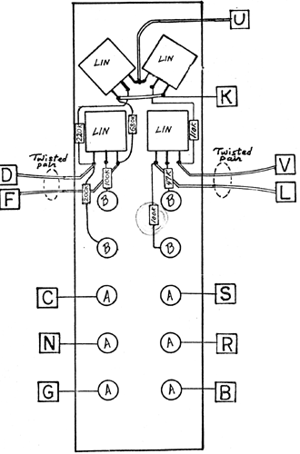

|
Variable Band-Pass Filter Wiring Diagram
 Use Teflon tubinq on long resistor leads to avoid shorts. Twist the wires to pads V and L together loosely. Twist the wires to pads D and F together loosely.
RESISTOR COLOR CODE:
SELF-TEST PROCEDURE: The best test of the filter's proper operation is using white noise from the Noise Source module. The filter action should be evident at the LOW and HIGH outputs. Bands Fl and F2 are fixed bandwidth outputs but the center frequencies are variable. The extremeties of these two bands define the variable bandwidth output at BAND F1-F2 output, and also define the LOW cut-off frequency and the HIGH cutoff frequency. Check for proper operation with both manual and voltage control on the center frequency control ( VC-F ) and the Bandwidth control ( VC-BW ). The 1V/oct inputs should shift the center frequency and the bandwidth by a factor of two (one octave) for each change of one volt of control voltage.
Text from later version of the instruction page -Use tefflon tubing on long resistor leads to avoid shorts. Twist the wires to pads V and L together loosely. Twist the wires to pads D and F together loosely. The best test of the filter's proper operation is using white noise from the NOISE SOURCE module. The filter action should be evident at the LO PASS and HIGH PASS outputs. The HI BAND and LO BAND are fixed bandwidth outputs but their center frequencies are determined by the settings of the FREQ and BW controls (as well as by control voltages affecting these parameters). The extremeties of these two bands define the bandwidth at the VAR WIDTH output, and also set the cut-off frequency for the LO PASS and HI PASS outputs. Check for proper VC control of Frequency and Bandwidth. Check thw IV/OCT outputs with a sawtooth waveform from an oscillator which is being control led by the same control voltage into the oscillator' s IV/OCT input. The filter should track the oscillator's frequency. Adjustments can be made on the VCF2 for proper tracking at 1V/octave. One adjustment, on the left between the two bottom sub-modules on the PC board, adusts for 1V/octave tracking of the center frequency. This trimmer is labelled "100". Other trimmers labelled "100k" should not be adjusted. These are for optimum control voltage rejection and these trimmers need adusttment only if the sub-modules are replaced or repaired. The other trimmer between the middle two sub-modules may be adjusted to get a 1V/octave tracking with the band-width. (This trimmer is also labelled "100".)
|